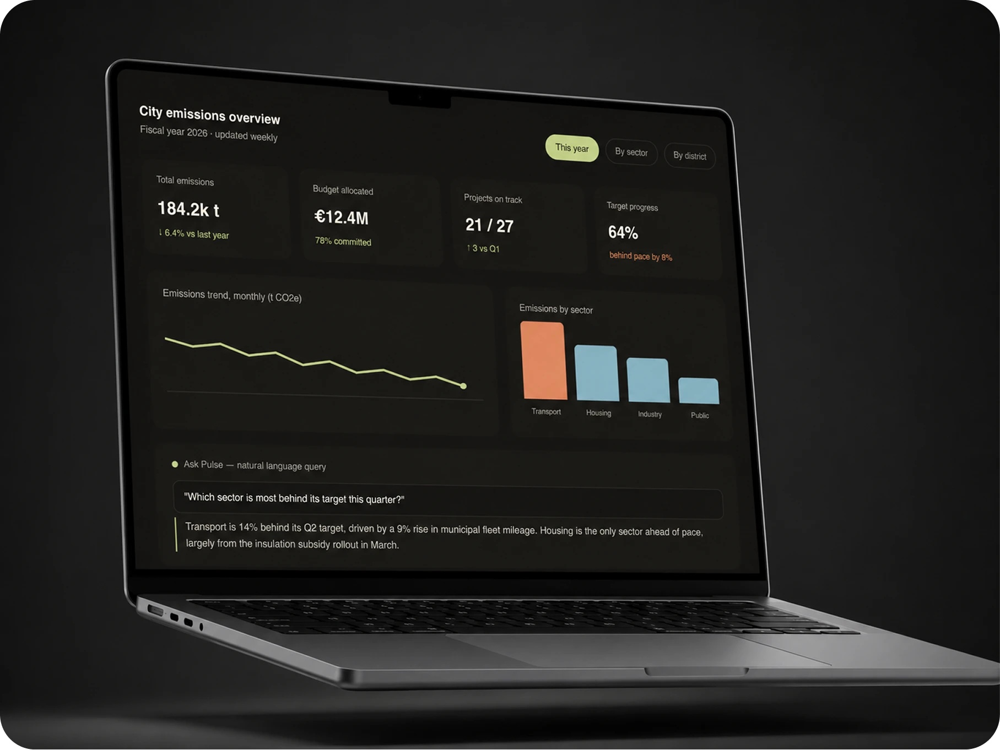
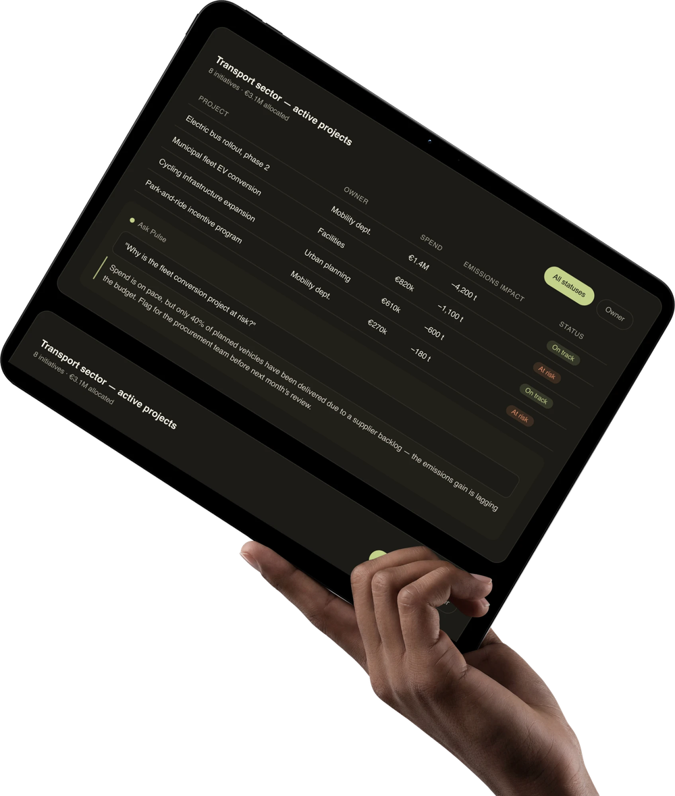
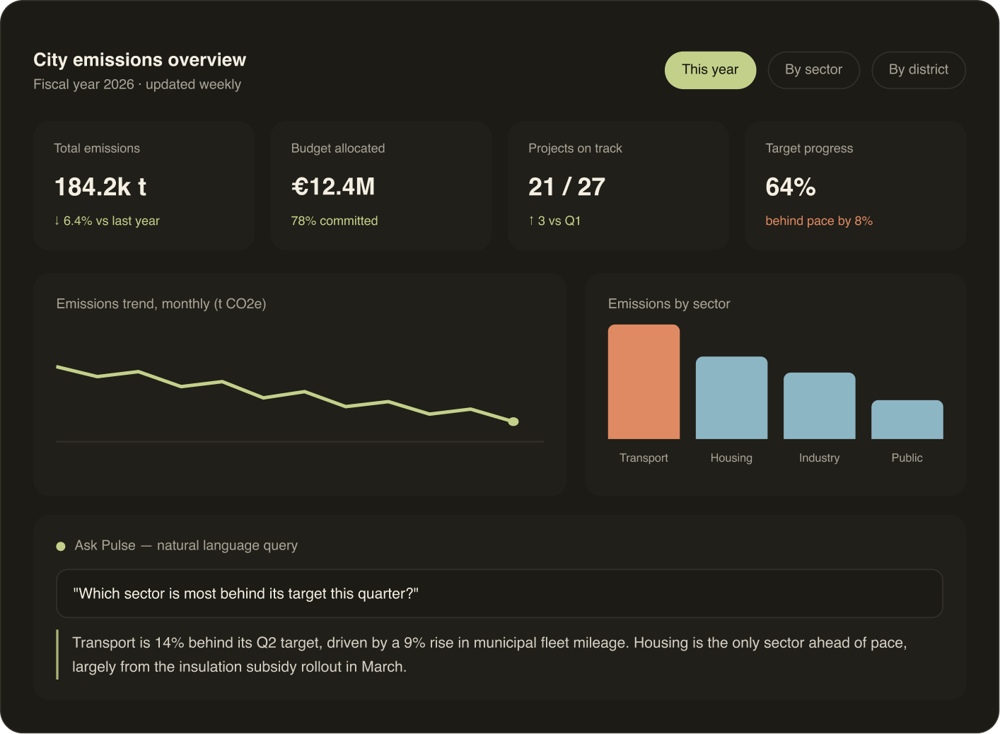
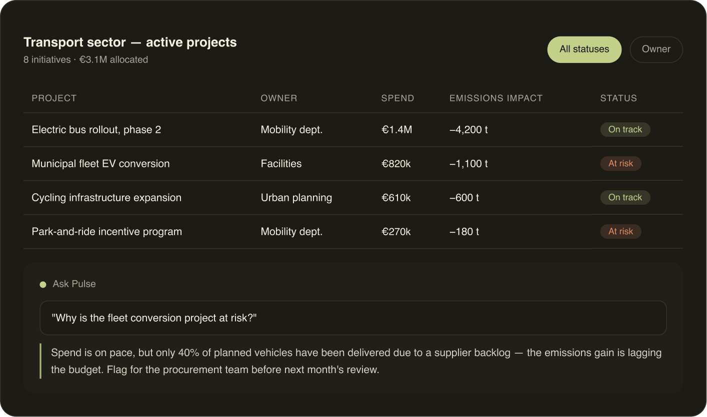

Pulse
Problem solvedDesigned as a proof-of-concept for how a data-and-design consultancy might approach a public-sector analytics engagement: structuring messy data, designing an interface around real decisions, and layering in conversational AI so non-technical stakeholders can ask questions in plain language.
From raw emissions data to a decision-ready dashboard
Turning raw municipal emissions data into a decision-ready dashboard for city sustainability officers, with an AI-assisted insight layer.

A dashboard that has to justify a budget, not just display numbers
A mid-sized city’s sustainability office tracks energy use, emissions, and project spend across departments, but the data lives in disconnected spreadsheets. Ahead of the annual council budget review, the sustainability officer needs one place that shows what’s working, what’s falling behind, and where the next euro should go — understandable to council members who aren’t data people.
City sustainability officer, presenting to a non-technical council. Needs credibility and speed, not raw data exploration.
Which sectors are on track to meet emissions targets? Where is spend underperforming? What should next year’s budget prioritize?
One glance, three questions answered
KPI cards surface the numbers that open every council conversation. The trend line shows momentum, the sector chart shows where emissions actually come from, so nobody has to ask “compared to what?”

From “what happened” to “what do I do next”
Clicking any KPI or bar opens a project-level view, so the officer can go from a council-level number to the specific initiative behind it without leaving the flow.

Research → structure → design → prototype
Framed the dashboard around three questions the officer needed to answer in council, not around the data that happened to exist.
Cleaned and joined a public open-data set (CBS Statline-style municipal energy data) using SQL, modeling it into sector, district, and project levels.
Wireframed as overview-to-detail flow: KPIs first, trend and comparison second, drill-down last — so no one gets lost in the data.
Mocked a natural-language query panel to test whether plain-English answers reduce the need to interpret charts manually.
What this project demonstrates
- Translating a business/policy problem into an information hierarchy, not just a chart layout
- Working hands-on with structured data (SQL-modeled) rather than designing on placeholder content
- Interaction design for drill-down and filtering across two connected screens
- An early, testable take on conversational AI — where AI supports interpretation instead of replacing the visualization
What I used
Concept case study, designed to demonstrate dashboard and interaction design for data-driven decision-making.